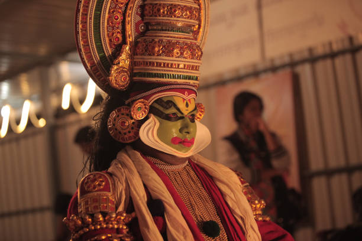

Home
About Kerala
Tourist Destinations
Cultural Insights
Festivals
Welcome to Kerala
Explore the culture, history, and scenic beauty of God's Own Country
Discover Kerala's Culture

Explore Kerala on the Map